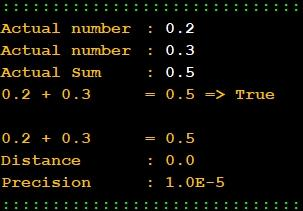

Comparing Real Numbers - Accuracy |
 |
// Programador Ant0ni0 M@ns0 - Ant0ni0 M@ns0
#include <iostream>
#include <cstring>
#include <cmath>
using namespace std;
// Class definition
class Ficha04_010 {
public:
int main() {
cout << "Actual number \t: ";
float r1;
cin >> r1;
cout << "Actual number \t: ";
float r2;
cin >> r2;
cout << "Actual Sum \t: ";
float r3;
cin >> r3;
float sum = r1 + r2 ;
float distance = abs( sum - r3 ) ;
float precision = 1.0E-5 ;
cout << r1 << " + " << r2 << " \t= " << r3 << " => ";
if(distance < precision ){
cout << "True";
}else{
cout << "False";
}
cout << "\n\n" << r1 << " + " << r2 << " \t= " <<( ( r1 + r2 ) );
cout << "\nDistance \t: " << distance ;
cout << "\nPrecision \t: " << precision ;
return 0;
}
};// end of class Ficha04_010
// Execute main function
int main(){
Ficha04_010 application; // create object
application.main(); // execute object
return 0;
}
//C++ - Automatic translated by Algorithmi 22.05
//(c) Ant0nio M@nso domingo, 2022 set 18 23:28